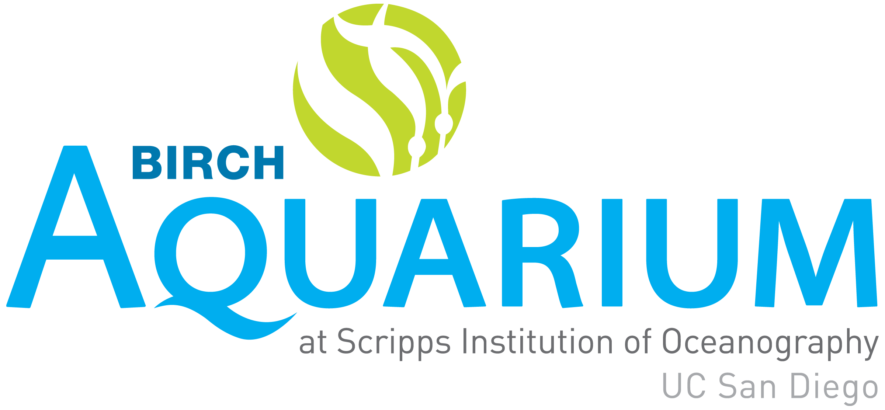
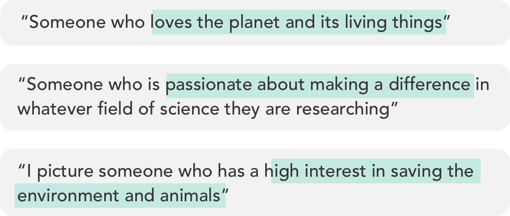
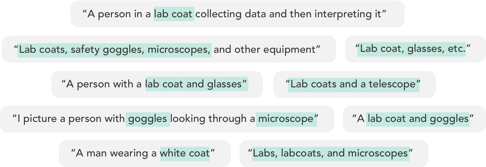
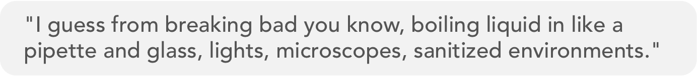
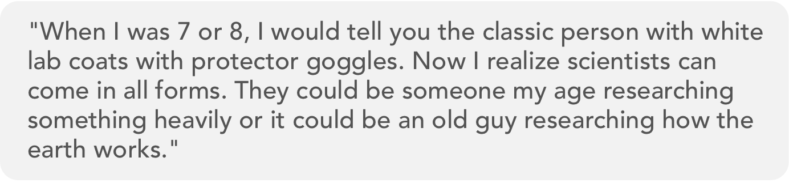
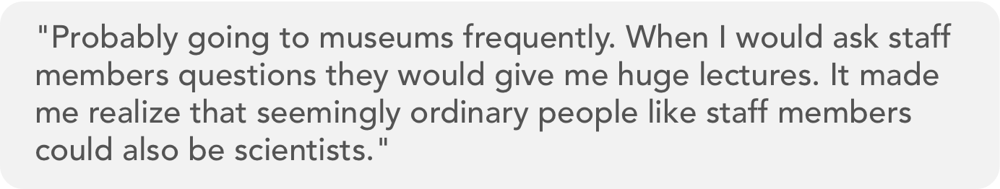
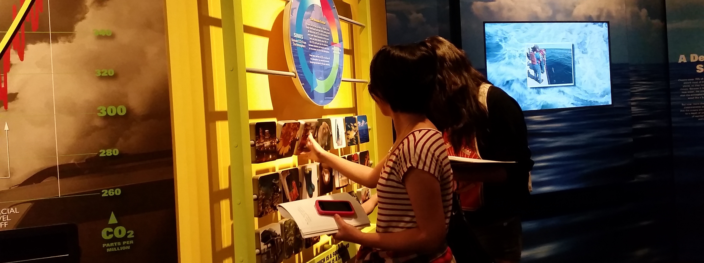
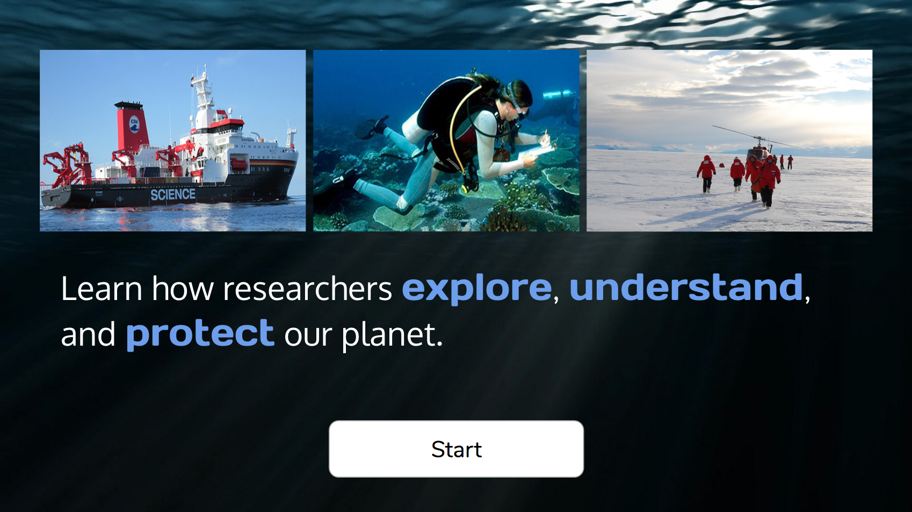
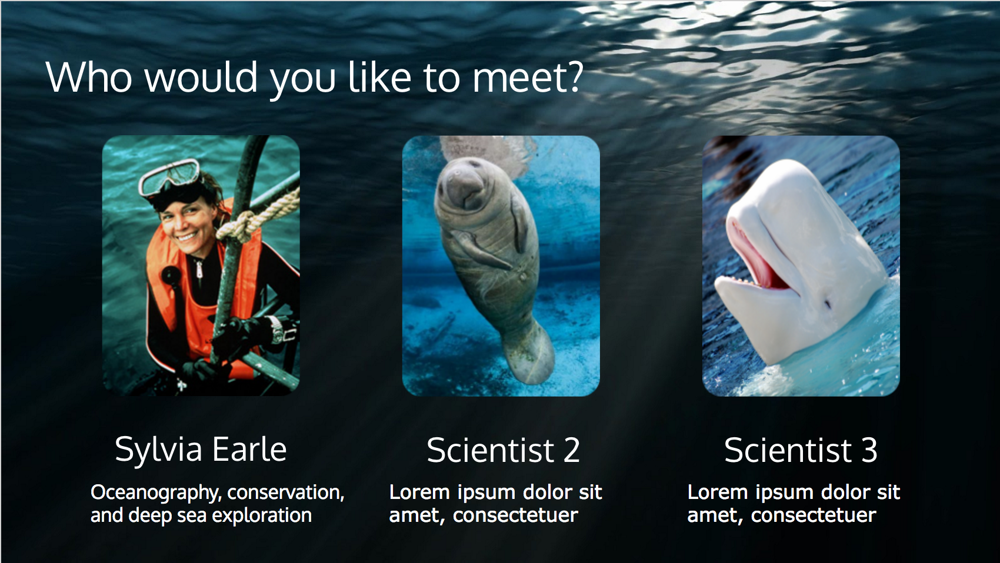
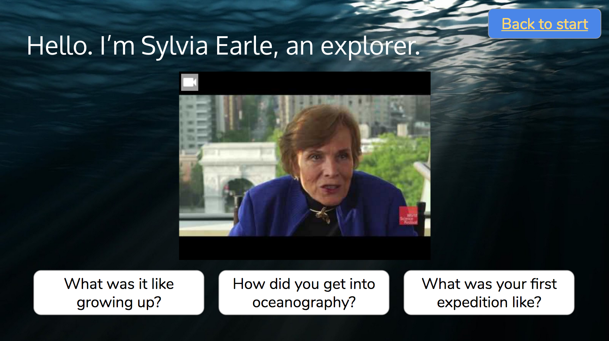

Affiliated with UC San Diego, the Birch Aquarium houses multitudes of marine lives and offers family-oriented exhibits designed to communicate the global environmental concerns. Current plans to remodel the exhibit centers on the theme of exploration in science, as related to journeys that scientists take to assess conditions of the natural environment. Diving frigid waters, exploring Antartica icebergs, and living in the middle of the Pacific Ocean are some of the adventurous and rewarding experiences that oceanographers encounter.
Role
UX Designer
Project Members
Kanyanat Tongprasearth, Connie Guan Emily Tao, Amber Tang, Jay Shin
Duration
March 2016 - June 2016
Goals
This project's success would entail designing an exhibit that is engaging, family-friendly, and informative. The objective is to challenge the stereotypes of scientists as related to typical images of labcoats, flasks, and laboratories. Instead, we want to present them as passionate adventurers set to understand changes in the natural environment and promote preservation of the earth.
Contributions
User Research | Ideation | Competitive Analysis | User Testing I made significant contributions to all aspects of the project including interviewing, brainstorming design ideas, prototyping, and user testing at the aquarium. The final high-fidelity prototype shown here is my personal contribution.
Deliverables
User research results, high-fidelity prototypes, user testing results

On-site interviews
Our team visited the Birch Aquarium to observe the space and conduct interviews with staff members including the manager at visitor service, gift shop store manager, guest greeter, and ticket collector. We wanted to learn about the visitors' pattern of interactions and what experiences they are walking away with.
Overall, we found that visitors were excited and enjoyed seeing the animals from the aquarium section. However, they didn't learn much from the educational exhibit section. The kids mainly played with the interactive parts of the exhibits, but didn't fully understand the messages being conveyed about global warming, pollution, and other concerns. With the assumption that the exhibits were tailored to kids, most adults had minimal engagement.
Surveys
Going back to our exhibit goals of breaking the stereotypes of scientists, we wanted understand how people currently view scientists. We created a survey asking participants this question: "What comes to mind when you imagine a scientist?"
Survey details: 58 participants | ages: 14-22 | 57.4% Female 37.7% Male 4.9% Other
6.9% of participants mentioned qualities such as the passion for making a difference as well as the interest in the living things and the environment. These qualities show scientists as intrinsically motivated and enthusiastic about their work.

51.7% of participants mentioned stereotypical characteristics such as wearing lab coats and using typical tools such as goggles and microscopes. They were often the sole characteristics defining scientists.

INTERVIEWS
How do people currently think of scientists? Posing the same question, we received similar trends of responses in our interviews. However, we were able to converse with the participant and dig deeper into possible influences of their perspectives.
One participant told us about the influences of media:

Another participant had a change in perspective:

We asked: What caused the change?

Insight The media may offer a one dimensional story of scientists and the typical associations of labs, lab coats, and microscopes. However, genuine interactions with scientists or associated people can offer new perspectives. These experiences can humanize scientists and reveal a more complete story of their passion and motivations.

DEFINING THE DESIGN CHALLENGE
We framed the design challenge in order to guide our prototyping approaches. From user research, we concluded our findings and put together a design approach that addresses the challenge.
Current state: First thoughts about scientists are often stereotypical environments, tools, and associations. On the other hand, characteristics such as curiosity, determination, and passion are rarely mentioned.
How stereotypes arise: It's easy to convey the concept of a scientist by presenting visual aspects (labs, lab coats, goggles) that immediately communicate the idea. It's more difficult to show more complex characteristics such as curiosity and passion.
Design Challenge: How can we design an aquarium exhibit that challenges the stereotypes and changes the way people think about scientists?
Approach to Design challenge: The stereotypical images may or may not be accurate but regardless, it is a one-sided story. We can challenge the stereotype by introducing other stories about challenges, motivations, and aspirations that humanize scientists and make them more relatable.
PROTOTYPING as A HYPOTHESIS
We can humanize scientists by allowing aquarium visitors to have a personal conversation with the scientists. However, it would be neither practical nor impactful on a large scale to ask scientists and oceanographers to converse with visitors individually. Instead, what if we could simulate the conversation?
Design concept: Instead of inviting scientists to the aquarium, we can conduct an interview with a scientist and ask them to discuss their work, motivations, impact, and challenges. This gives them an opportunity to reveal aspects of being a scientist that is often overlooked. With permission, we will videotape the interview and use it as part of the aquarium exhibit.
Design Goal: Spark a connection and interest by hearing the first-hand experiences of a scientist. The stories that differ from the stereotypical images can expand the views of scientists, adding on to the variety of topics, tools, and environments they work in. Furthermore, hearing the struggles as well as success brings out the imperfection that’s often not shown, but shows a more authentic perspective of the profession.

An introductory page that allows users to learn about scientists and their work in the field.

Users can select a scientist to learn about. A brief description of each scientist is displayed.

Users can choose from a selection of questions to hear stories from the scientist themselves.
Prototype Testing
Do aquarium visitors see scientists in a new light and have a more well-rounded perspective of them? We went to the Birch Aquarium and asked interested visitors to test out our prototype. Our goal is to get feedback on whether our exhibit prototype effectively addresses the design challenge. We received a wide range of responses from different user types.
Children: Children were not fully engaged with the interview-style videos. They were quite distractible and had difficulty paying attention to a lengthy video, which displayed the scientist conversing with the interviewer.
Teenagers: Teenagers were intrigued by the stories told. They listened attentively and were eager to ask more questions. In the follow up interview, they told us that they learned novel and unexpected things about scientists.
Parents of kids: Since the kids were easily distractible, the adults were attending to their kids and had difficulty focusing on the prototype as well.
Resulting insight: Teenagers appreciated the stories told in a first-person narrative form because it gave fresh perspectives to the scientific works. They paid close attention and had meaningful takeaways from the video. However, younger children were more difficult to engage and may require other means of capturing their attention.
Final prototype
Can we use more engaging visuals to help direct the attention of young children? We iterated on the prototype by modifying the videos themselves. To engage younger audiences at the aquarium, we created an animation video that visually illustrates the stories being told. Drawings are sketched out and words are emphasized in correspondence with the pace of the story.
Credits to Emiliy Tao for the awesome video sketch!
In the final prototype, I incorporated the video sketch which offers a multimodal style of communication, engaging the audience through the story as well as the visuals. At the end of each video, users can select a question from the available choices to ask the scientist. Tapping on the question will lead to another video where the scientist will address the question, simulating a back-and-forth style of conversations.